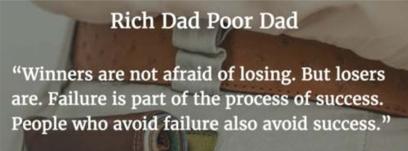

Rich Dad Poor Dad
Title: Rich Dad Poor Dad
Author:Robert T. Kiyosaki
Type: Non-fiction
Published in: 1997
Number of copies sold: ~26 million
Curious fact: Both Kiyosaki and the book are highly
controversial, not least
because Kiyosaki has declared bankruptcy
himself multiple times (last in 2012).
Even though the book is
always listed as non-fiction, Kiyosaki has insinuated
multiple times that his “rich dad” never existed.
Best quote from the book:
When you want something, all the universe conspires to help you
achieve it.
Summary: The book starts with Kiyosaki re-telling the story of his childhood. His real dad, whom he considers to be his “poor dad” was an academic, who earned a decent living, but, according to him, never really understood some of the most important principles of money. He explains how the father of a friend took the two kids under his wings and taught them how businesses and money work, by having them work in one of his stores for next to nothing, but educating them about money in his spare time. The book then takes a turn and explains what “financial literacy” looks like, how you should approach your personal finances and work, what you can do to leverage taxes and laws to your advantage, before it ends with a few very practical first steps you can take.

Why is it such a motivational book?
Some people love this book, others hate it. I love it. The story of
Robert’s childhood (invented or not) is super inspiring, making the
book worth a read regardless of the financial advice. Yet, the way it
approaches personal finance is very simplistic, which
gives you a sense of relief. Yes, his definitions of
assets and liabilities might not be 100% accurate, but if you’ve never
even understood them before, this’ll help.
It’s more of a beginner’s book for sure, but it
gets you in the right mindset for financial success,
and shows you what you can do right now to start building wealth. For
example, I used the book’s “pay yourself first” principle to instantly
put away 10% of my income, and that alone felt pre.tty good